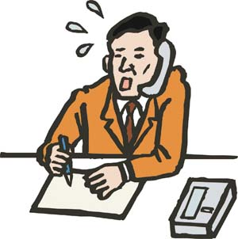
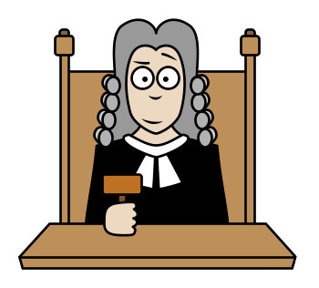
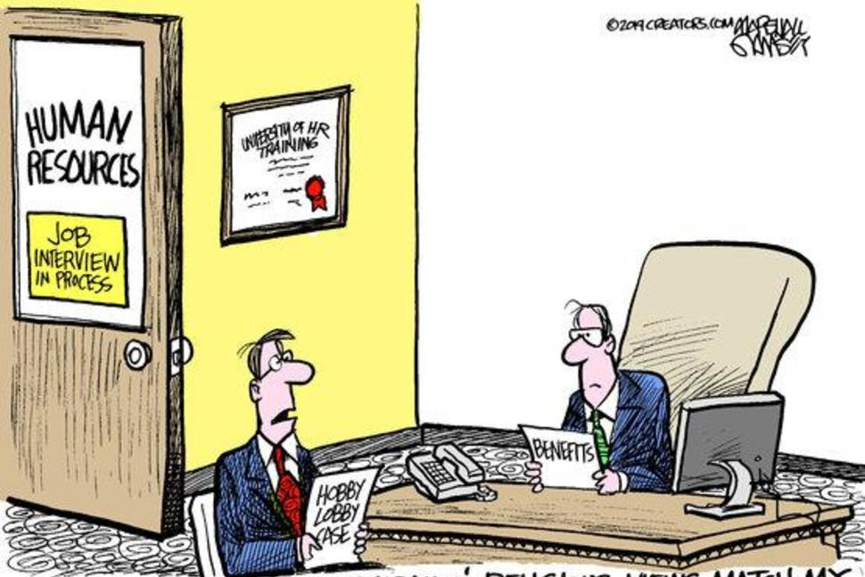

Facts about the effect of age, gender-career and gender-science biases and strategies to minimize them when recruiting.
Please scroll down to familiarize with the specific biases.Once you have read about the bias/-es you need to work on, we encourage you to re-do the pre-test again and compare your results with the first you did.
Empirically, there is a correlation between how we implicity associate things or people and our behaviours and judgments. An example of that is that individuals with a moderate to strong association of"young"with "cheerful" and "energy"
were more likely to favor a young candidate over a equally qualified older candidate.
Do you want to know more about these bias's effects? Just Click!
Empirically, there is a correlation between how we implicity associate things or people and our behaviours and judgments. An example of that is that individuals with a moderate to strong association of "male"with "professional development"
were more likely to favor a young candidate over a equally qualified older candidate.
Do you want to know more about these bias's effects? Just Click!
Empirically, there is a correlation between how we implicity associate things or people and our behaviours and judgments. An example of that is that individuals with a moderate to strong association of "male"with "science" and female with
"liberal arts"are more likely to favor a male candidate over a equally qualified female candidate.
Do you want to know more about these bias's effects? Just Click!
Gender-Science Discrimination
Learning Strategies
Here are some strategies you can use at work when recruiting, hover over and click to reveal them:



Telephone interviews can help reduce visual biases, although some will unconsciously try to identify demographic factors from the person’s voice.
Blind interviews, where the interviewee is behind a screen or is in another room, have been used by performance groups for years to minimize visual bias.
Offering online or in person” questionnaire interviews” eliminate both voice and visual biases. Interview questions are simply converted into a questionnaire format and then the candidate is asked to answer the interview questions on a
computer. This approach has an added advantage of leaving a record of both the questions and the answers provided
“We have a person who is not related to the hiring process receive all of our resumes. They make copies of each resume, and then remove names, addresses, school names, and other identifying information. It’s all replaced with a unique
ID. The hiring team then looks through those resumes and selects candidates to interview.” They also ensure every interview candidate gets asked the same set of questions every time they interview to make sure every candidate receives
an equal chance to put his or her best foot forward.
Supplementing or replacing the interview with real problem-solving.